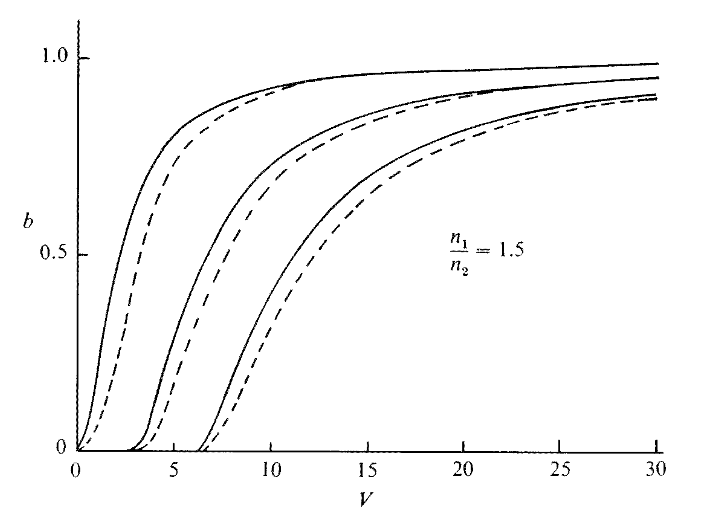

The fundamental (even) mode corresponds to the lowest solution of the eigenvalue equation. For any finite value of the normalized frequency \(V\), this mode always exists.
The \(m^{\text{th}}\) mode corresponds to higher discrete solutions of the eigenvalue equation.
\[ m = 0,1,2,\ldots \]Each higher mode has additional field nodes across the core.
The normalized propagation constant is defined as
\[ b=\frac{\dfrac{\beta^2}{k_0^2}-n_2^2}{n_1^2-n_2^2}=1-\frac{\xi^2}{V^2/4}. \]For guided modes:
\[ n_2^2< \frac{\beta^2}{k_0^2}< n_1^2, \] \[ 0< b < 1. \]
At cutoff, \(\beta=k_0 n_2\), so \(b=0\). The eigenvalue relations reduce to:
\[ \frac{V}{2}\tan\left(\frac{V}{2}\right)=0 \quad \text{(symmetric modes)}, \] \[ \frac{V}{2}\cot\left(\frac{V}{2}\right)=0 \quad \text{(antisymmetric modes)}. \]Hence the cutoff values are:
\[ V_c=m\pi, \qquad m=0,1,2,\ldots \]Each higher-order mode appears only when \(V>V_c\).
For \(m=0\), the cutoff value is
\[ V_c=0. \]Since any physical waveguide has \(V>0\) (finite thickness and index contrast), the fundamental mode has no cutoff and therefore always exists. Thus a dielectric slab waveguide supports at least one guided mode for any finite \(V\).
Inside the core \(\left(-\dfrac{d}{2} < x < \dfrac{d}{2}\right)\), an even TE mode is
\[ E_y(x,z,t)=A\cos(\kappa x)\,e^{i(\omega t-\beta z)}. \]The factor \(e^{i(\omega t-\beta z)}\) represents:
The phase velocity along \(z\) is
\[ v_{p,z}=\frac{\omega}{\beta}. \]The transverse factor \(\cos(\kappa x)\) represents a standing-wave distribution across the core.
This shows the field is a superposition of two plane-wave components with
\[ k_x=\pm\kappa, \qquad k_z=\beta. \]The transverse power flow cancels because the two components have equal magnitude and opposite \(k_x\). Net power transport is along \(+z\).
For a uniform core of index \(n_1\):
\[ k_1=n_1 k_0, \] \[ \beta^2+\kappa^2=k_1^2. \]This relation connects the longitudinal and transverse components of the wavevector inside the film.